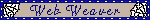
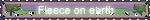
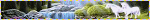
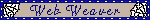
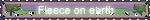
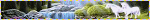

Welcome to Dryad Glen!
And thank you for visiting my little home~ I try to stop by every few days, but you can always reach out to me elsewhere. (Mostly tumblr, but anywhere you see a cyberneticdryad is fair game!)
While you're here, I would love if you signed my guestbook! I'm making a playlist over on Spotify and YouTube of songs suggested by my lovely visitors. =3
 







Update Log
5/18/2025 | Journal update. Made a few little edits around the kitchen and added my meatloaf recipe!
3/12/2025 | Added some links to the KotOR Shrine as well as some old LiveJournal/DeviantArt links to the KotOR Fanworks page. Added one fun link and a couple open access image resources to my general links page. Also thank you for 300 followers! I know there are a few more of you as some of you are on other parts of the indieweb, but really from the bottom of my heart, thank you for all of your own work for inspiring me to start and continue with Dryad Glen. =3
02/12/2025 | Journal update once again! Added a couple recipes and recipe notes.
01/29/2025 | Updated my journal for the new year finally! To the archive with 2024, and forward we adventure into 2025.
12/29/2024 | Just a lot of link updates today! Sad to see more linkrot via deleted/archived sites and/or no redirects, but we persist!
12/26/2024 | Happy holidays all! Made one last journal update for 2024. Started listing out my 2025 goals. Added one new recipe link. Wrote up some of my thoughts on Veilguard even though I haven't finished it yet!
10/16/2024 | Updated the guestbook playlists on spotify and youtube. Updated the welcome text on the second index, adjusted the decor a bit, and added my new buttons! (It's been almost a year since my site overhaul, can you believe?) Cleaned up a couple broken links, squashed some typos. Made some lil updates to my Dragon Age shrine and added the bones for a Veilguard page. Added Tallie to my personal pokemon page. Am still lost in fiber arts land, and Dragon Age coming out at the end of the month won't help!
09/13/2024 | Added one new recipe. Added two new fanlistings and updated one. Updated my 2024 goals because I've had to change a lot of plans and expectations for the year.
09/02/2024 | Hello friends! Short journal update about IRL life taking over my online life for a bit, added a couple recipe links, added Seafare's Dragon Age shrine to my page for others' shrines because I TOO AM MOVING INTO DRAGON AGE MODE. Missed you all, and can't wait to see what y'all've been up to!
Happy Pride to all my favourite queer folks on the internet! Just a some small updates while my brain continues to be consumed by spinning and crochet projects to cope with work changes: Updated the library with what I'm currently reading including updates for June bookbug. Added one new recipe we liked to the kitchen and updated my pantry a bit. I am slowly working on updating my neighbors on my links page, so if you're not up, please bear with me! I promise it's happening a lil bit at a time.
05/05/2024 | Quick journal update. Updated the bookbug members (there sure are a lot of us now!).
5/4/2024 | May the 4th be with you! Mostly updates to the library today: updated my currently reading list, added one book to my 2024 library picks, and started my entry for May bookbug. Also added one new link to the recipes page.
04/20/2024 | Journal update about my birthday and my unexpected absence from the site. Updated the guestbook playlists on spotify and youtube. Updated some fanlisting/cliques links and added one. Added a couple more recipes we've tried. Otherwise just typo squishing and making little odds and ends of code neater to get me back in the swing of things!
03/03/2024 | Lots of little backend updates to various links (mostly moved/inactive fanlistings), moving site components, cleaning up some dumb coding stuff (because sometimes I brute force things when I know there's a better way but I'm frustrated). Started a crochet page.
For older updates, check the archive!
To Do List
- Add RSS feed
- Update credits page
- Update Neocities Neighbors
- More media shrines (Wolf's Rain, Mass Effect, mahou shoujo)
- Join a bajillion pixel clubs
- Listening Room
- Pictures for the library
- Pictures for crafting pages
- New recipes!
Link me!


save to your own server please!